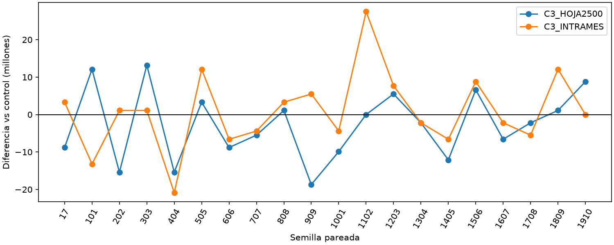
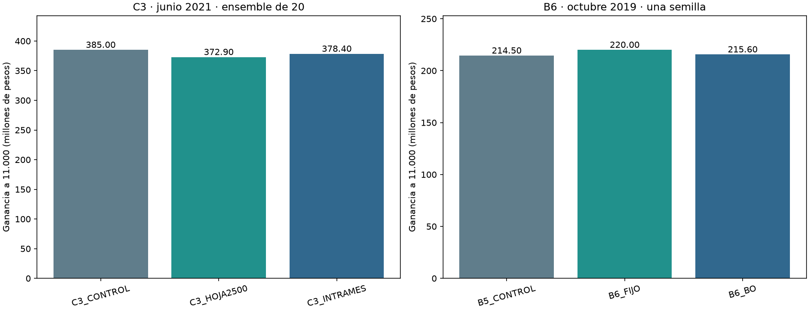

Resultados reales de nuevas corridas en clari-c1-fundados. Dos series independientes: no comparar sus ganancias absolutas entre períodos.
Ganar dinero no prueba que los ratios sean la causa: los controles ya tienen ganancia positiva. El aporte de cada cambio se mide como diferencia contra su control, a igual presupuesto de contactos.
C3: conservar el control como referencia. El ensemble con ratios pierde $6,6 millones y seis aciertos a 11.000 contactos; hoja mínima 2500 pierde $12,1 millones y once aciertos. Los ratios suben ligeramente el AUC, pero no la ganancia principal. Por semilla ganan 10 veces, empatan una y pierden nueve: no hay mejora uniforme. B6 fijo gana $5,5 millones y cinco aciertos frente a B5; reoptimizado gana $1,1 millones y un acierto. B6 fijo todavía queda debajo de los anteriores B2 ($222,2 millones) y B4 ($224,4 millones). No adoptar automáticamente ninguna variante: falta validar en otro período y repetir B6 con varias semillas.
Los cocientes de consumo, saldo, límites y operaciones de la misma foto pueden representar intensidad de uso mejor que las magnitudes por separado. Se separa este cambio de una regularización más fuerte en C3 y de la optimización de hiperparámetros en B6. No se replica el experimento ganador de ratios personales históricos.
C3: control original, sólo hoja mínima2500 y sólo cuatro ratios nuevos; train marzo–abril2021, evaluación junio, BAJA+2,300 árboles,20 semillas pareadas. B6: control B5, B5+7ratios con sus mismos parámetros/281 árboles, y B6 reoptimizado con20 pruebas; train marzo–junio2019, validación agosto, target combinado y evaluación octubre. Métrica económica principal predefinida:11.000contactos. Bandas10.500/11.500 secundarias.
Las tres razones monto/operación agregadas a B6 ya existían en C3 y se excluyeron allí tras verificar igualdad. Las cuatro de tarjetas se calculan sobre suma Master+Visa, conservando marca observada y dejando NA si ambas faltan. Denominador positivo finito; numerador negativo finito conservado. No se agregaron los totales de tarjetas como nuevas predictoras, para no mezclar sus efectos con los de los cocientes.
| serie | brazo | variables | AUC | ganancia_10500 | ganancia_11000 | ganancia_11500 | aciertos_11000 | delta_control_11000 |
|---|---|---|---|---|---|---|---|---|
| C3_junio2021 | C3_CONTROL | 2062 | 0.898272 | 383350000 | 385000000 | 382250000 | 625 | 0 |
| C3_junio2021 | C3_HOJA2500 | 2062 | 0.898229 | 371250000 | 372900000 | 375650000 | 614 | -12100000 |
| C3_junio2021 | C3_INTRAMES | 2066 | 0.898690 | 380050000 | 378400000 | 382250000 | 619 | -6600000 |
AUC de C3 corresponde al ensemble en junio; ganancia del ensemble no equivale al promedio de ganancias de las semillas.
| arm | mean_delta_11000 | median_delta_11000 | sd_delta_11000 | wins | ties | losses |
|---|---|---|---|---|---|---|
| C3_HOJA2500 | -2,695,000.000000 | -2,200,000.000000 | 9,309,727.510287 | 8 | 1 | 11 |
| C3_INTRAMES | 825,000.000000 | 550,000.000000 | 10,268,647.991773 | 10 | 1 | 9 |

La dispersión describe aleatoriedad del entrenamiento en el mismo mes, no incertidumbre temporal entre meses.
| serie | brazo | variables | AUC | ganancia_10500 | ganancia_11000 | ganancia_11500 | aciertos_11000 | delta_control_11000 |
|---|---|---|---|---|---|---|---|---|
| B6_octubre2019 | B5_CONTROL | 1254 | 0.932468 | 224950000 | 214500000 | 206250000 | 470 | 0 |
| B6_octubre2019 | B6_FIJO | 1261 | 0.931930 | 228250000 | 220000000 | 209550000 | 475 | 5500000 |
| B6_octubre2019 | B6_BO | 1261 | 0.931277 | 223850000 | 215600000 | 207350000 | 471 | 1100000 |
AUC de B6 corresponde a validación agosto2019; las ganancias a octubre2019. B6_FIJO vs B5 aísla el agregado de la familia manteniendo hiperparámetros y rondas; B6_BO agrega reoptimización. Una familia no identifica cuál ratio individual produjo el cambio.

| brazo | contactos | ganancia |
|---|---|---|
| B5_CONTROL | 3597 | 283882500 |
| B6_FIJO | 4364 | 283690000 |
| B6_BO | 3886 | 286935000 |
Cada modelo elige en agosto su máximo de ganancia, con desempate por menor número de contactos, y transfiere la fracción a octubre. No se elige un corte mirando octubre. Comparar estas cifras mezcla ranking y política; por eso11.000es el resultado principal.
| modelo | contactos | ganancia | aciertos_BAJA2 | precision |
|---|---|---|---|---|
| B0 | 11000 | 209000000 | 465 | 0.042273 |
| B1 | 11000 | 207900000 | 464 | 0.042182 |
| B2 | 11000 | 222200000 | 477 | 0.043364 |
| B3 | 11000 | 217800000 | 473 | 0.043000 |
| B4 | 11000 | 224400000 | 479 | 0.043545 |
| B5 | 11000 | 214500000 | 470 | 0.042727 |
Resultados históricos del mismo octubre2019, presentados descriptivamente. Su inspección previa impide considerar esta extensión como una nueva evaluación independiente.
| serie | brazo | contactos | retenidos | entran | salen | BAJA2_entran | BAJA2_salen | delta_BAJA2 | delta_ganancia |
|---|---|---|---|---|---|---|---|---|---|
| B6_octubre2019 | B6_FIJO | 11000 | 10231 | 769 | 769 | 9 | 4 | 5 | 5500000 |
| B6_octubre2019 | B6_BO | 11000 | 10172 | 828 | 828 | 9 | 8 | 1 | 1100000 |
| C3_junio2021 | C3_HOJA2500 | 11000 | 9651 | 1349 | 1349 | 37 | 48 | -11 | -12100000 |
| C3_junio2021 | C3_INTRAMES | 11000 | 10568 | 432 | 432 | 12 | 18 | -6 | -6600000 |
A igual número de contactos, cada acierto BAJA+2 neto adicional aporta exactamente1.100.000pesos de diferencia. La tabla muestra bajas detectadas que entran y bajas que se pierden al cambiar de ranking. Es una descomposición del resultado observado, no una atribución causal a un ratio particular.
| serie | brazo | BAJA+2 | BAJA+1 | CONTINUA |
|---|---|---|---|---|
| B6_octubre2019 | B5_CONTROL | 470 | 505 | 10025 |
| B6_octubre2019 | B6_FIJO | 475 | 507 | 10018 |
| B6_octubre2019 | B6_BO | 471 | 502 | 10027 |
| C3_junio2021 | C3_CONTROL | 625 | 591 | 9784 |
| C3_junio2021 | C3_HOJA2500 | 614 | 588 | 9798 |
| C3_junio2021 | C3_INTRAMES | 619 | 593 | 9788 |
En B6, BAJA+1 cuenta como positiva para AUC, pero no como acierto económico. Por eso el orden por AUC combinado puede diferir del orden por ganancia.
| brazo | ratio | gain_pct_promedio | modelos_que_lo_usan |
|---|---|---|---|
| B6_BO | intrames_tc_consumo_sobre_limite | 0.064341 | 1 |
| B6_BO | intrames_tc_pago_sobre_minimo | 0.120635 | 1 |
| B6_BO | intrames_tc_ticket_consumo | 0.121504 | 1 |
| B6_BO | intrames_tc_uso_limite | 0.324596 | 1 |
| B6_BO | intrames_ticket_atm | 0.039981 | 1 |
| B6_BO | intrames_ticket_pagomiscuentas | 0.027955 | 1 |
| B6_BO | intrames_ticket_transferencias_emitidas | 0.035966 | 1 |
| B6_FIJO | intrames_tc_consumo_sobre_limite | 0.077709 | 1 |
| B6_FIJO | intrames_tc_pago_sobre_minimo | 0.092363 | 1 |
| B6_FIJO | intrames_tc_ticket_consumo | 0.171421 | 1 |
| B6_FIJO | intrames_tc_uso_limite | 0.215257 | 1 |
| B6_FIJO | intrames_ticket_atm | 0.020744 | 1 |
| B6_FIJO | intrames_ticket_pagomiscuentas | 0.051502 | 1 |
| B6_FIJO | intrames_ticket_transferencias_emitidas | 0.037968 | 1 |
| C3_INTRAMES | intrames_tc_consumo_sobre_limite | 0.541046 | 20 |
| C3_INTRAMES | intrames_tc_pago_sobre_minimo | 0.177394 | 20 |
| C3_INTRAMES | intrames_tc_ticket_consumo | 0.492638 | 20 |
| C3_INTRAMES | intrames_tc_uso_limite | 0.720990 | 20 |
Importancia interna normalizada por modelo; no es porcentaje de ganancia económica ni efecto causal. Si hay mejora, las ablaciones posteriores deben separar cada cociente.
| serie | ratio | ratio_observado | observado_con_soporte_marcas_distinto | porcentaje_soporte_distinto |
|---|---|---|---|---|
| B6 | consumo_sobre_limite | 682828 | 308303 | 45.150902 |
| B6 | pago_sobre_minimo | 650970 | 0 | 0.000000 |
| B6 | ticket_consumo | 642015 | 0 | 0.000000 |
| B6 | uso_limite | 747933 | 0 | 0.000000 |
| C3 | consumo_sobre_limite | 431405 | 209161 | 48.483675 |
| C3 | pago_sobre_minimo | 413468 | 0 | 0.000000 |
| C3 | ticket_consumo | 392696 | 0 | 0.000000 |
| C3 | uso_limite | 470398 | 0 | 0.000000 |
En consumo/límite, una marca puede tener límite observado y consumo faltante. La suma ignora ese consumo faltante y conserva el límite observado; por eso este cociente puede representar disponibilidad y faltantes además de uso. No prueba que haya cero consumo real. Este diagnóstico no cambió la fórmula congelada ni seleccionó modelos. Una variante que exija soporte común sería otro experimento.
62 modelos verificados por hash; ganancias recalculadas desde todas las predicciones. C3 reprodujo sus 20 semillas y su ensemble de referencia en los tres cortes. B5 reprodujo exactamente su curva previa. Detalle de controles.
Resumen CSV · Protocolo previo · Reproducir · Configuración
Código y métricas agregadas publicados; modelos, datos, matrices y scores individuales se conservan en respaldo privado. El control B5 debe reproducir exactamente su curva anterior antes de declarar completado el ensayo.